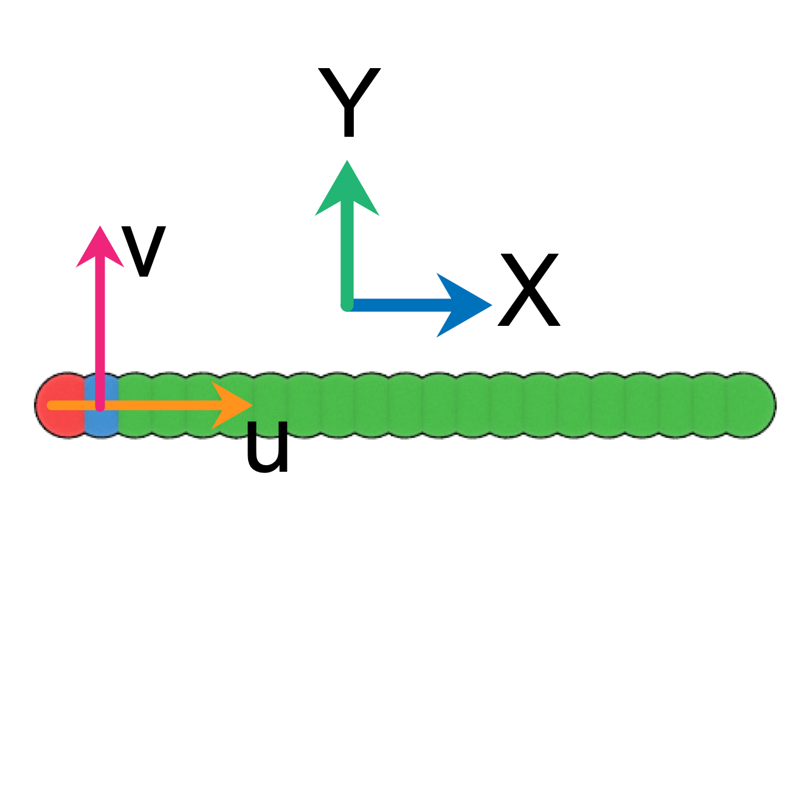
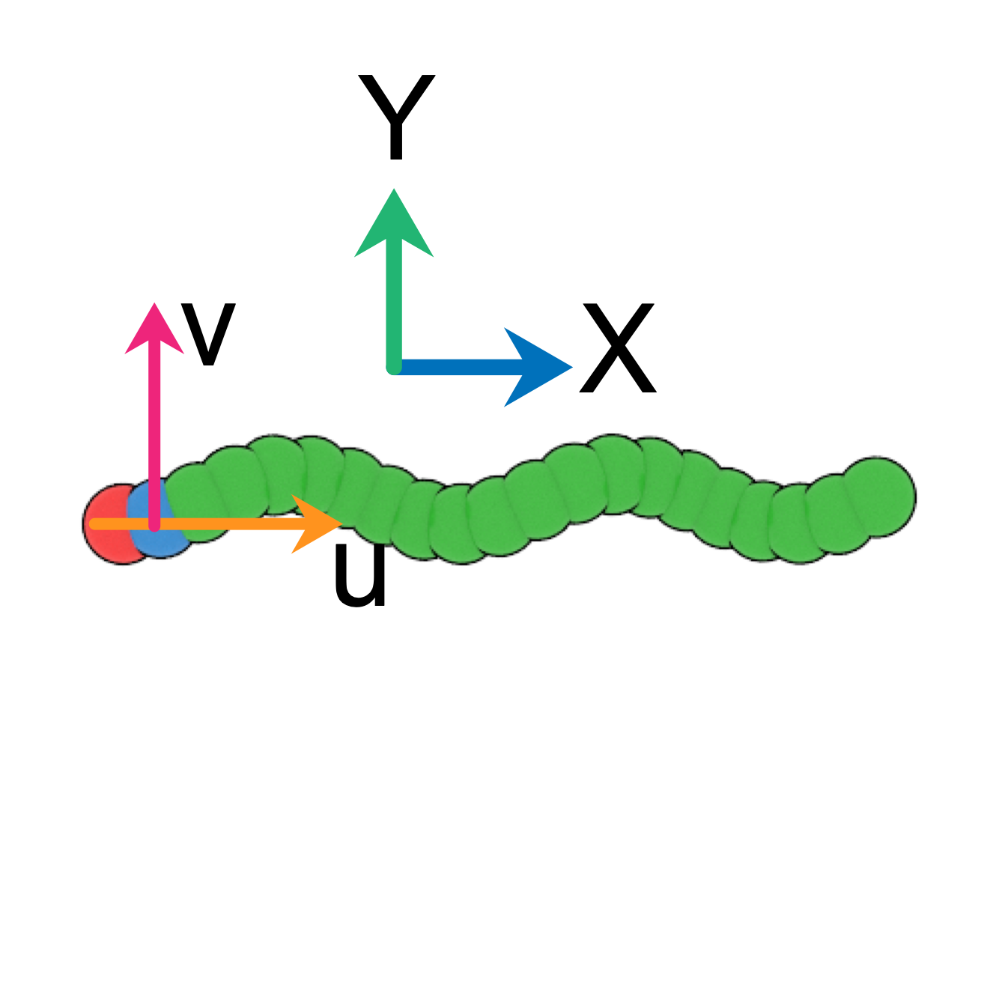

by Yawei Liu @ Sydney, Australia 2021/04/11
In this tutorials, I am going to show how to using Python to build rigid overlapping-sphere model [1] for nanoparticles with a given geometry.
The first example is a rod-shaped particle, which is described as a spherocylinder consisting of a cylindrical segment of length \(L\) and diameter \(D\) capped with two hemispheres. In the overlapping-sphere model, this spherocylinder is represented by a rigid linear chain of overlapping sphere of diameter \(D\) with their centres distributed uniformly on a line segment of length \(L\). The distance between consecutive spheres should be small enough so that the side effects associated with the grooves between overlapping spheres is negligible (I often use a value \(\Delta l \le 0.5\) [1,2]).
Here is the Python code to define a Class for rod-shaped particles:
import numpy as np
class Rod():
def __init__(self,L,D,N):
self.L = L
self.N = N
self.D = D
dl = L/(self.N-1)
self.atoms = np.array([[i*dl,0,0] for i in range(N)])
self.origin = self.atoms[0]
self.atom_types = np.array([3]*N)
self.atom_types[0] = 1
self.atom_types[1] = 2
self.cm = np.sum(self.atoms,axis=0)/N
self.u = np.array([1.,0,0])
self.v = np.array([0,1.,0])
print('Rod contour length: %f' %self.L)
print('Rod diameter: %f' %self.D)
print('Rod atom number: %d' %self.N)
print('Rod atom types: ',self.atom_types)
print('Rod origin: ',self.origin)
print('Rod cm: ',self.cm)Then, for example, one can use rod=Rod(L=10,D=1,N=21) to build a rod with \(L=10\), \(D=1\) and \(N=21\) as shown below:

Things need to be clarified are:
The second example is a helical particle with \(N\) spheres having diameter \(D\) evenly arranged in a helical string of contour length \(L\), pitch \(p\) and radius \(r\). The centres of these spheres are \[x_i=r \cos(t_i)\] \[y_i=r \sin(t_i)\] \[z_i=p \frac{t_i}{2\pi}\] with \(\Delta t = t_{i+1} - t_{i}\) and \(\dfrac{L}{N-1}=\Delta t \sqrt{r^2+\bigg(\dfrac{p}{2\pi}\bigg)^2}\).
Here is the Python code for a helical particle:
import numpy as np
class Helix():
def __init__(self,L,D,N,p,r,flag='right'):
self.L = L
self.N = N
self.p = p
self.r = r
self.D = D
dt = L/(N-1)/math.sqrt(r**2.+(p/2/math.pi)**2.)
ti = dt*np.arange(N)
if flag=='right': iy = r*np.cos(ti)
else: iy = -r*np.cos(ti)
iz = r*np.sin(ti)
ix = p*ti/2./np.pi
self.atoms = np.concatenate(([ix],[iy],[iz])).T
self.origin = self.atoms[0]
self.atom_types = np.array([3]*N)
self.atom_types[0] = 1
self.atom_types[1] = 2
self.cm = np.sum(self.atoms,axis=0)/N
self.u = np.array([1.,0,0])
self.v = np.array([0,1.,0])
self.Lambda = np.linalg.norm(self.atoms[-1])
print('contour length: %.3f' %self.L)
print('Euclidean length: %.3f' %self.Lambda)
print('diameter: %.3f' %self.D)
print('atom number: %d' %self.N)
print('picth: %.3f' %self.p)
print('radius: %.3f' %self.r)
print('atom types: ',self.atom_types)
print('origin: ',self.origin)
print('cm: ',self.cm)Calling helix=Helix(L=10,D=1,N=21,p=4,r=0.3,flag='left') can build a left-handed helical particle
as shown below:

© 2021 Yawei Liu. All content licensed under the Creative Commons Attribution-NonCommercial License 4.0 International (CC BY-NC 4.0).